Young Researchers
2015 - 2021
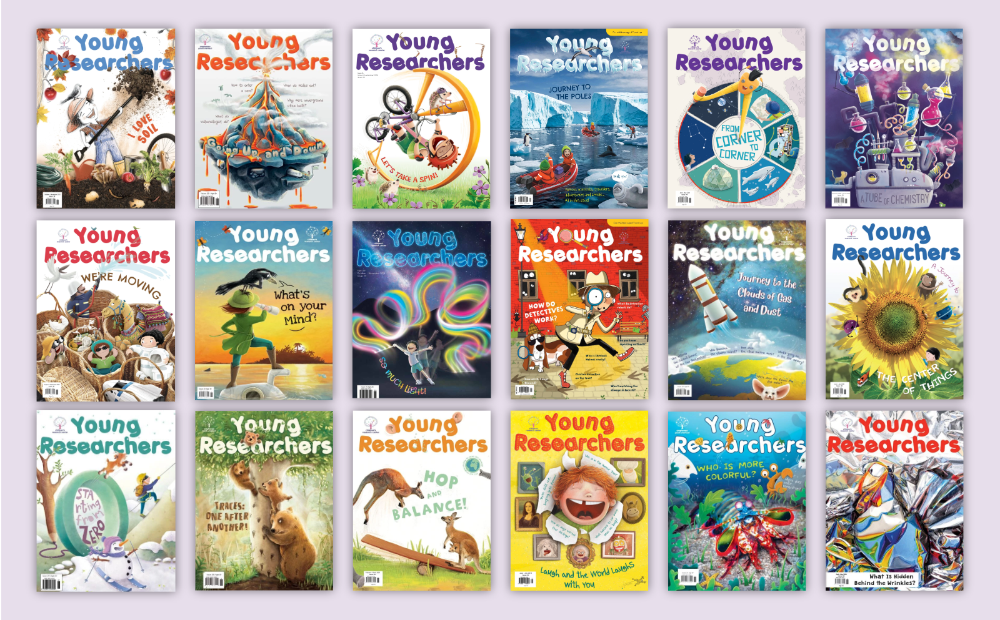
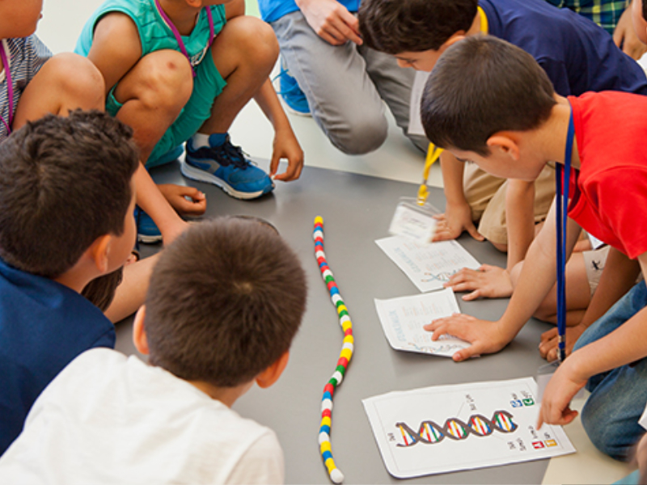
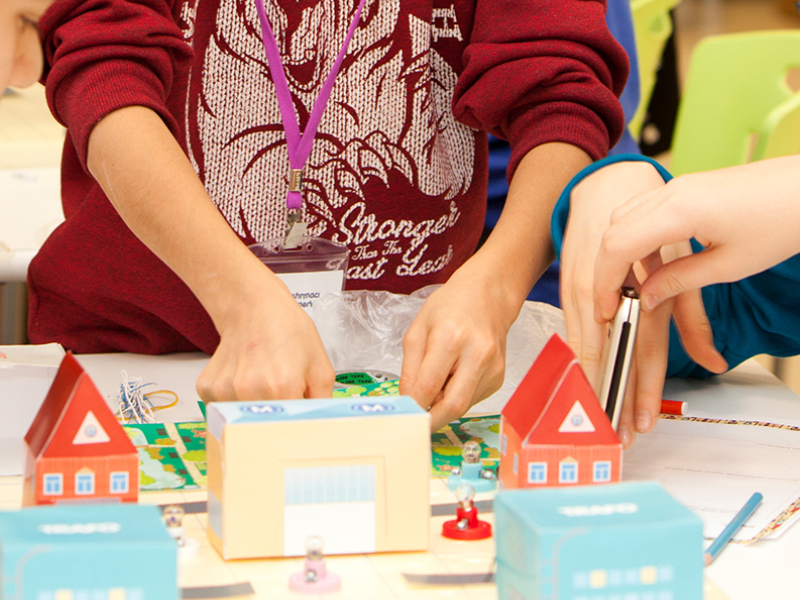
Young Researchers is a children’s educational magazine designed to spark curiosity and analytical thinking in 8-12‑year‑olds. It features STEM‑focused articles, hands‑on activities, colorful infographics, illustrations, and puzzles that guide readers through scientific concepts and creative challenges.
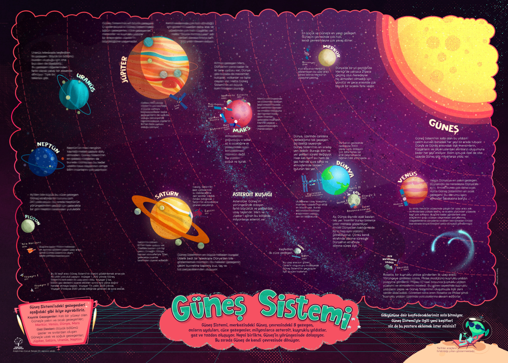
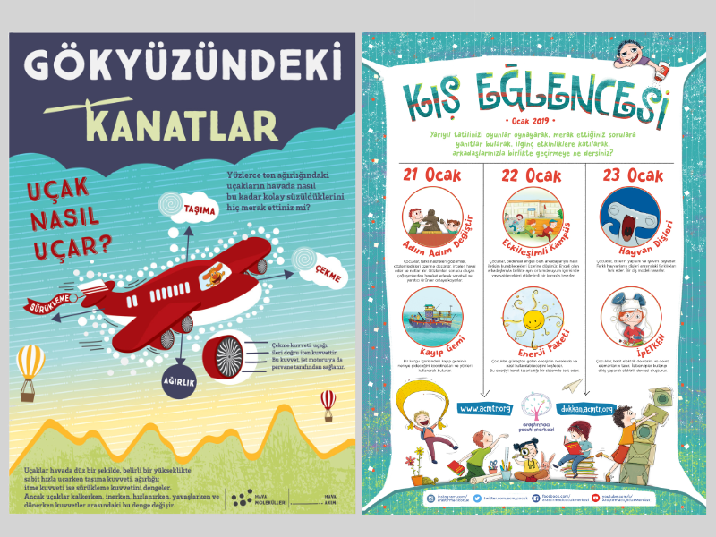
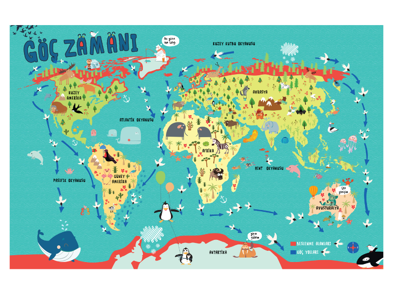
Designed playful, visually rich posters for both the Young Researchers magazine and independent educational workshops. Blended bold colors, engaging illustrations, and clear layouts to spark curiosity, invite interaction, and make learning topics feel exciting and accessible.
Educational Games
2015 - 2021
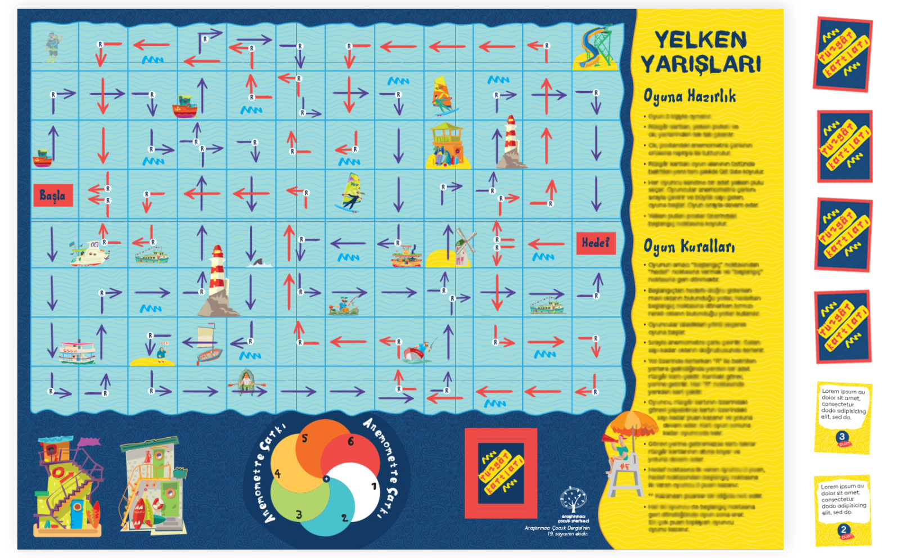
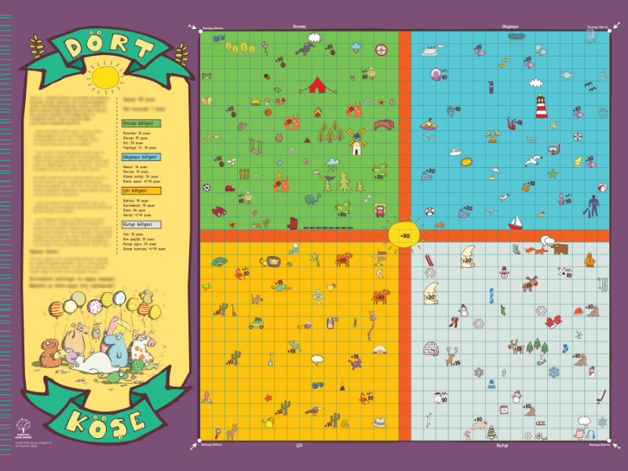
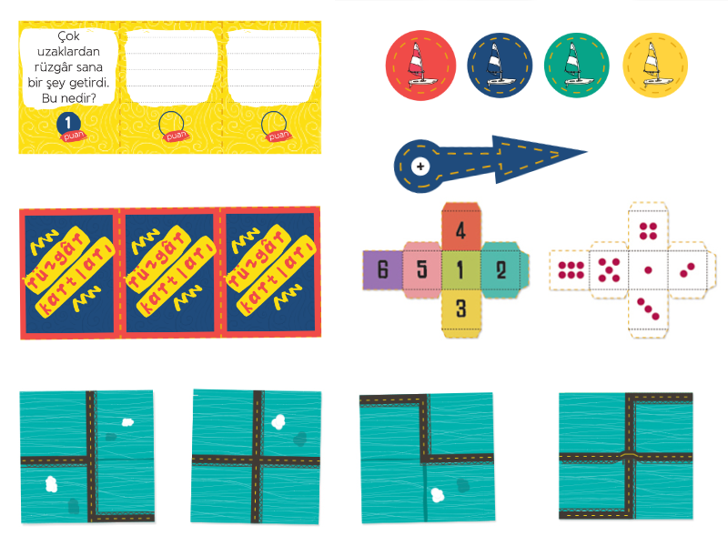
Created fun, interactive board and paper-based games with colorful illustrations and playful layouts for the Young Researchers magazine. Designed to spark curiosity and hands-on learning, the games encourage exploration, problem solving, and collaboration through activities.
Teacher as Researcher
2018 - 2021
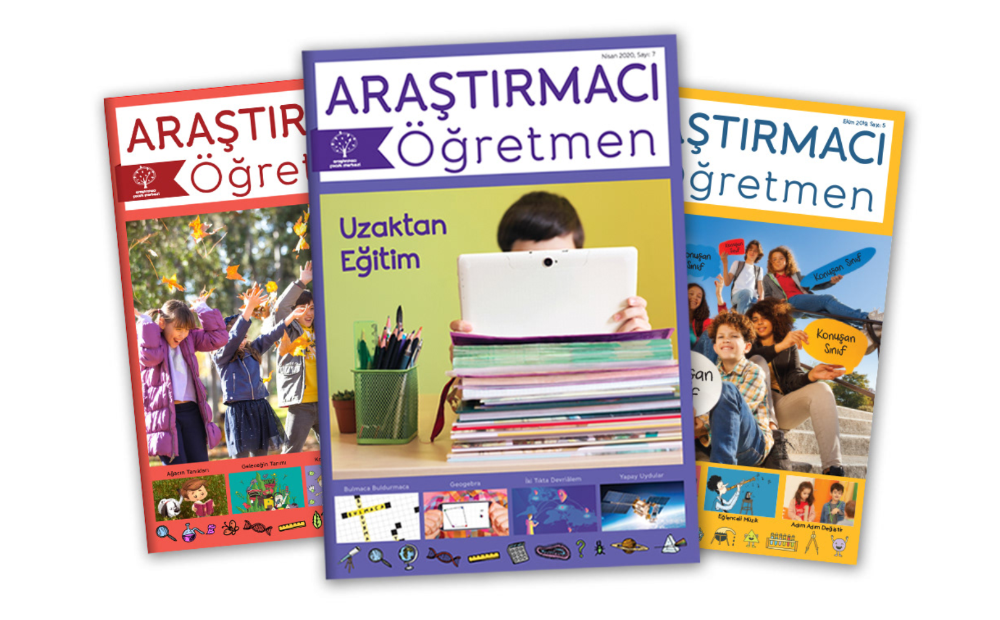
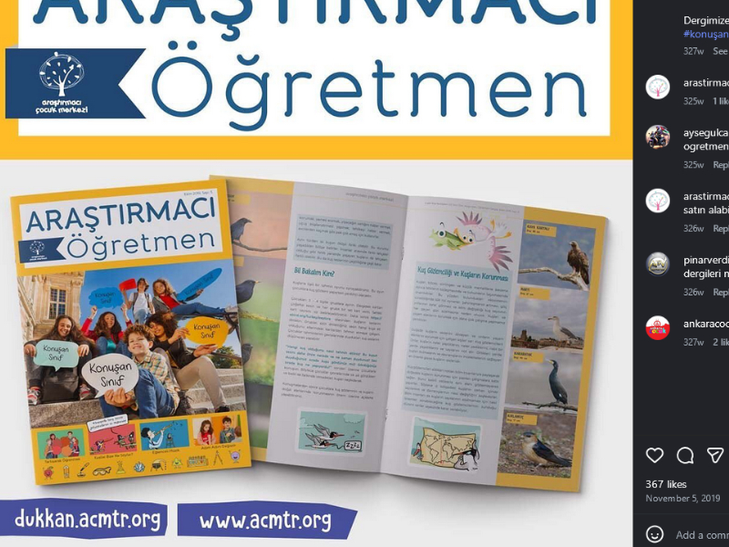
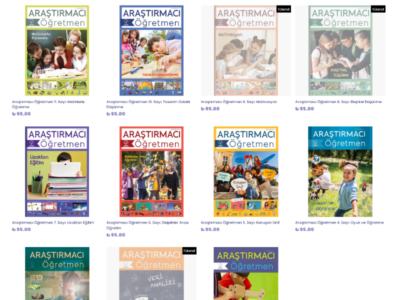
Teacher as Researcher is an educational journal empowering teachers with research based insights, practical tools, and inspiring examples. I designed the full publication including layouts, typography, and visual hierarchy, and produced content with original and commissioned illustrations, photography, and infographics. These designs remain in use, giving the journal a consistent, engaging, and accessible look.
Activity Books
2015 - 2020
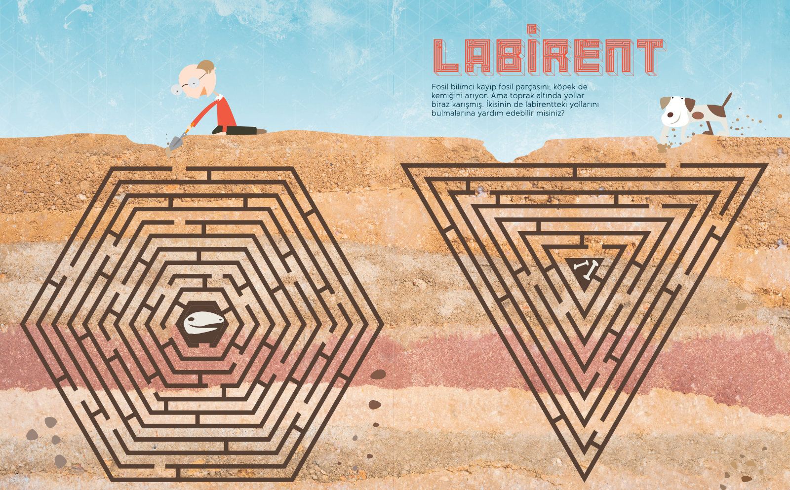
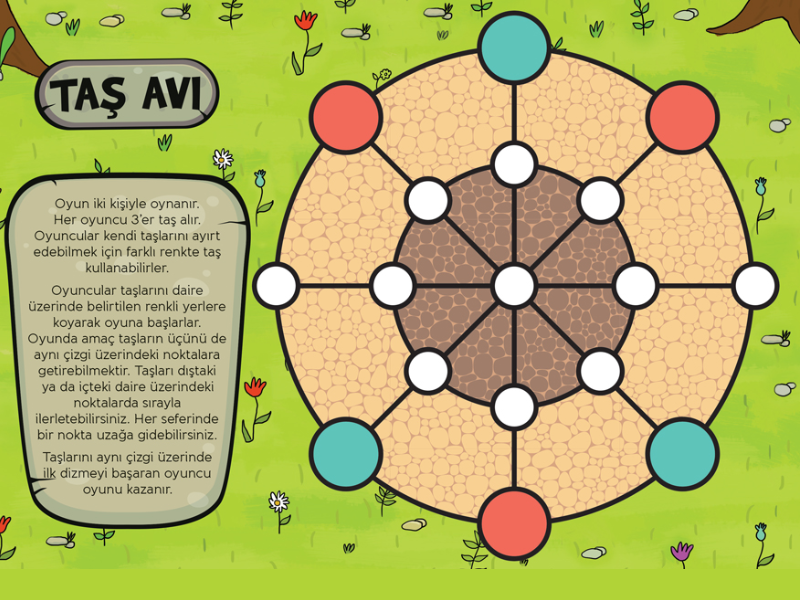
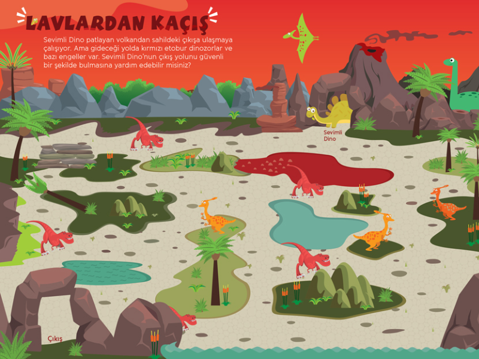
Interactive workbooks combining hands-on activities with educational content for Young Researchers magazine. Features mazes, coloring pages, cut-out crafts, word puzzles, drawing exercises, and DIY experiments. Designed to extend learning beyond reading through tactile engagement and creative problem-solving.
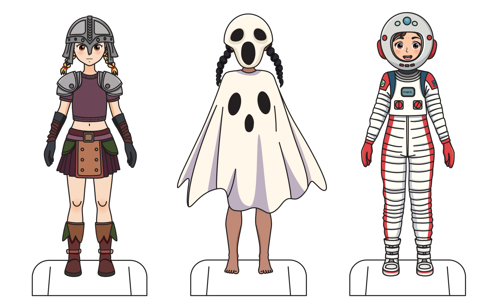
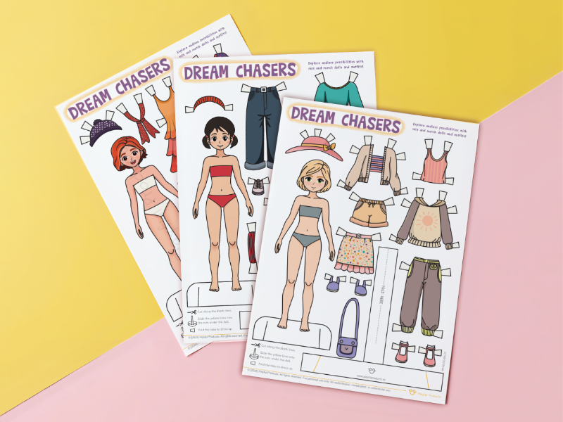
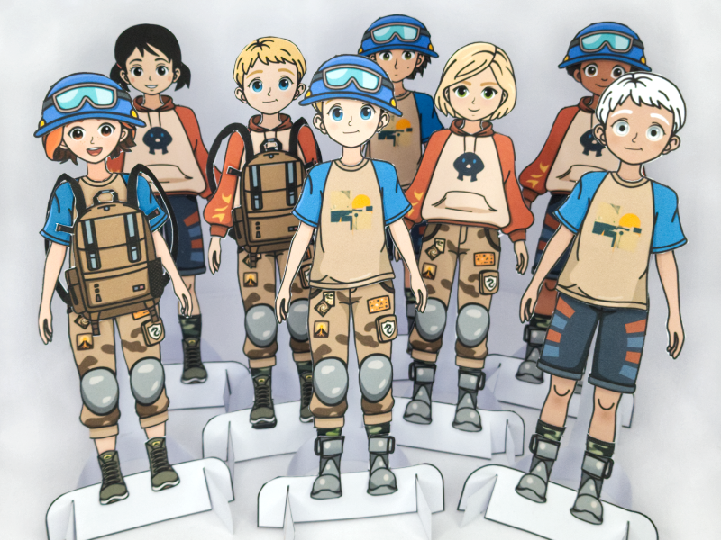
Hand-illustrated characters with mix-and-match outfits, accessories, and themed collections. Created as downloadable printables for creative play, featuring unique artistic styles and diverse character designs. Independent product line combining illustration, character design, and interactive paper craft.